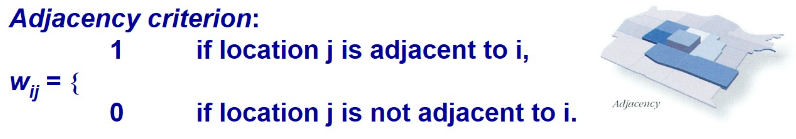
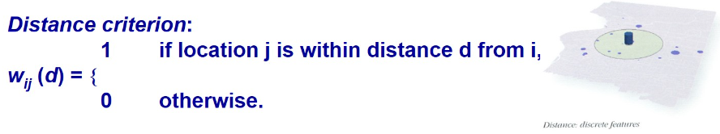
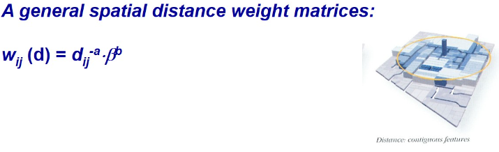

Notes 5
Spatial Weights and Applications
Spatial Weights (wij)
- A way to define spatial neighbourhood

It measure from centroid!
Need to clean data properly. EG. If we only need to find the childcare in SG, we should remove the outer island, else u might see centroid being not in the center of where you expect it
Defining Spatial Weights
- defines spatial weights based on if spatial units are physically contiguous or share a boundary or point of contact.
Types:
Rook’s Case: Units share a common edge (horizontally or vertically).
Bishop’s Case: Units share a corner (diagonally).
Queen’s Case: Units share either an edge or a corner, encompassing both Rook’s and Bishop’s cases.
Characteristics:
Binary Matrix: weights are either 1 (adjacent) or 0 (not adjacent).
Straightforward and easy to interpret.
Applicability: Useful for grid-based data, like raster data or when spatial units are laid out in a regular pattern. Applications: Often used in grid-based spatial models and geographic information systems (GIS) where spatial units are aligned in a regular pattern.

- defines spatial weights based on the distance between spatial units. (calculate the distance between the centroids or the nearest boundaries of the units)
Types:
Fixed Distance: Weights are assigned based on whether the distance between units is less than a specified threshold. For instance, units within 10 kilometers might be assigned a weight of 1, while others get a weight of 0.
Distance Decay: Weights decrease with increasing distance, often following a specific functional form like the inverse of distance or a Gaussian function.
Characteristics:
Continuous Matrix: Results in a matrix where weights can vary continuously depending on the distance, not just a binary 1 or 0.
Flexibility: Can handle irregular patterns and non-grid-based data.
Complexity: Requires distance calculations and can be more computationally intensive.
Applications: Useful in analyses where spatial units are not uniformly distributed, such as in ecological studies or when analyzing spatial interactions over varying distances.

- it generalize the distance criterion by allowing for various forms of distance-based weighting and are not restricted to binary or simple fixed-distance schemes.
Types:
Inverse Distance Weighting (IDW): Weights are inversely proportional to the distance.
Gaussian Weighting: Weights are based on a Gaussian function of the distance.
K-nearest Neighbors (KNN): Weights are assigned to the k nearest neighbors of each unit. This can be used to ensure a fixed number of neighbors regardless of distance.
Characteristics:
Versatility: Can accommodate various forms of distance relationships and decay functions.
Customizability: Allows for fine-tuning of spatial relationships based on the specific needs of the analysis.
Complexity: Can involve more complex calculations and parameter tuning.
Applications: Suitable for a range of spatial models, including those needing flexible distance-weighting schemes or when the relationship between spatial units is not strictly binary.

Contiguity Neighbours
- Contiguity (common/shared boundary)

Have 2nd, 3rd, 4th etc contiguity

Weights matrix:
Neighbour(s) of area 1202 using Rook case

Do not include urself in the calculation
Weights matrix for d = 650


Same as Distance-based neighbours, but inverse
Row standardisation
In practice, we will use this instead of spatial weights

Can use either row/col standardisation, it will give the same result
Applications of Spatial Weights

You are calculating the avg weight of ur neighbours, excluding yourself
Spatially Lagged Variables
Spatial Lag with row-standardized weights

Spatially Window Sum
- uses and includes the diagonal element.

Spatially Lagged Variables -> exclude yourself
Spatially Window Sum -> including yourself
With the diagram on the right, is easier to tell if there is a diff between GDP per capital between East & West [processed data]
We can tell there is a spatial relationship, not all the times we have